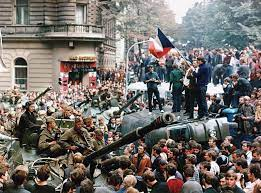
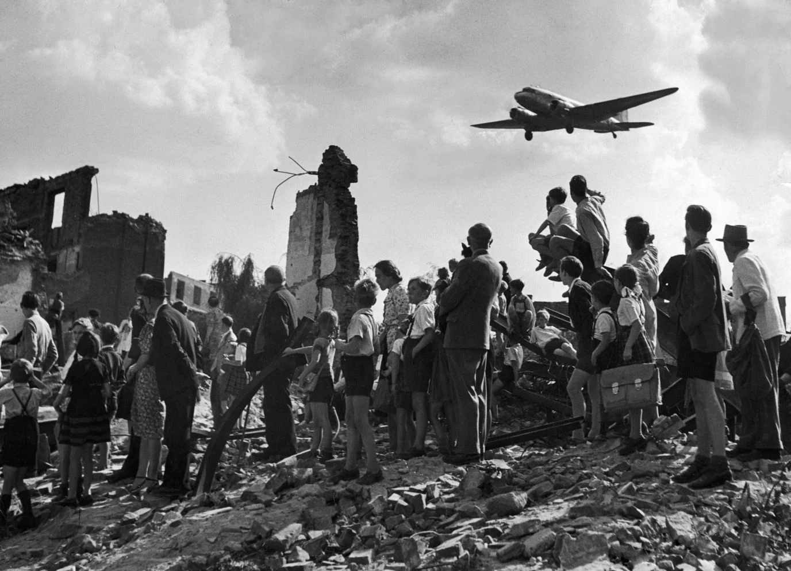
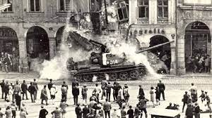
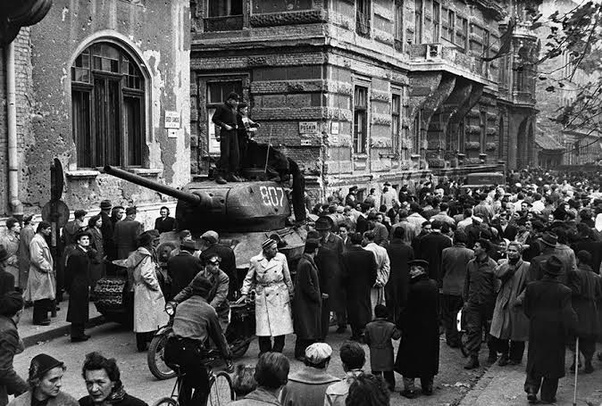
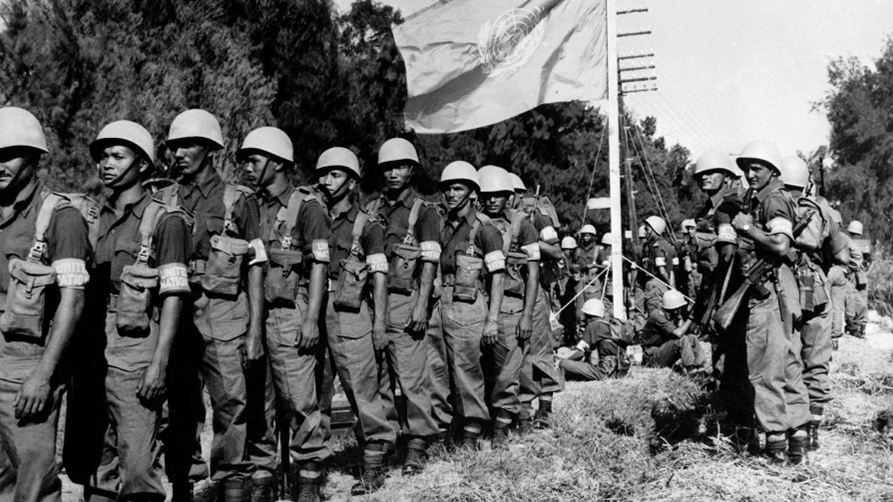
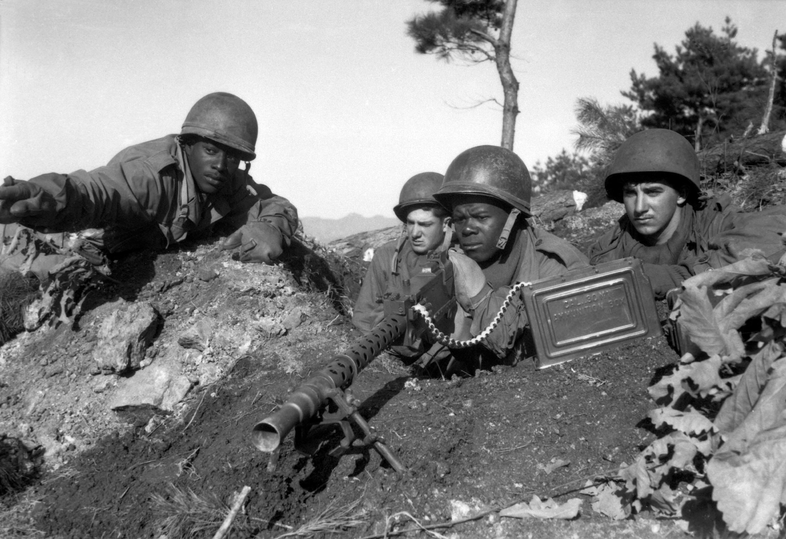
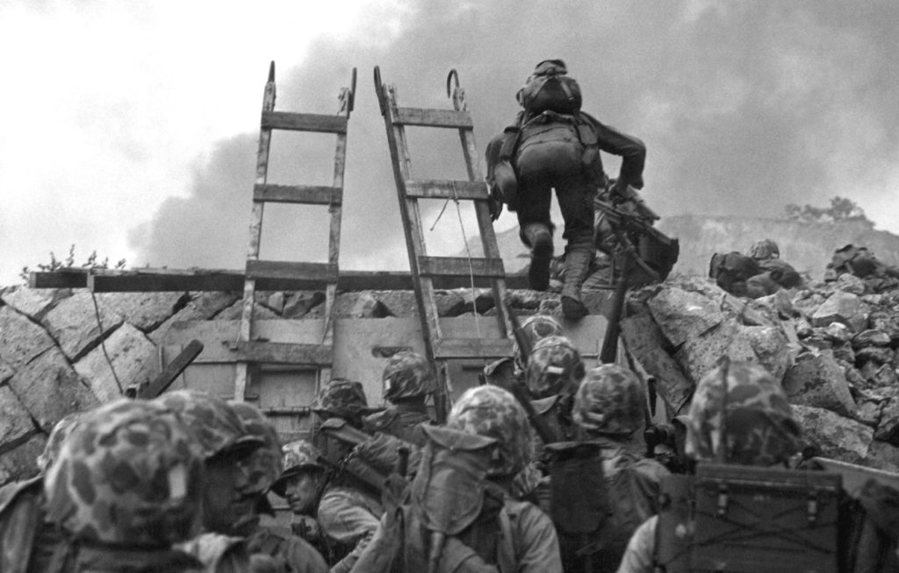
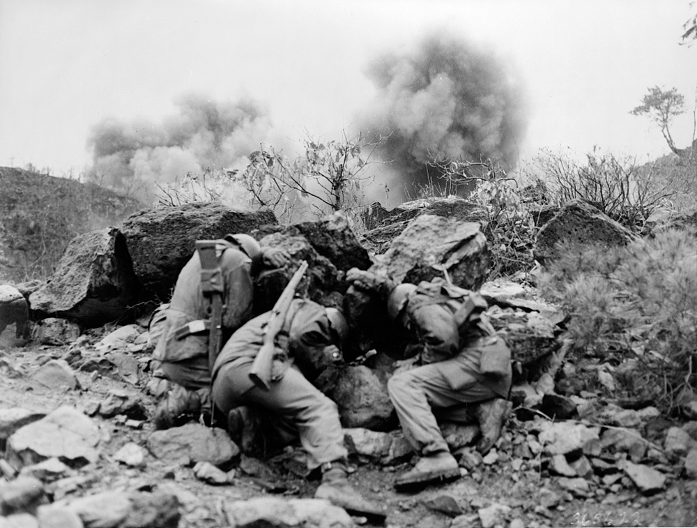
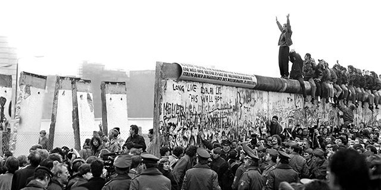
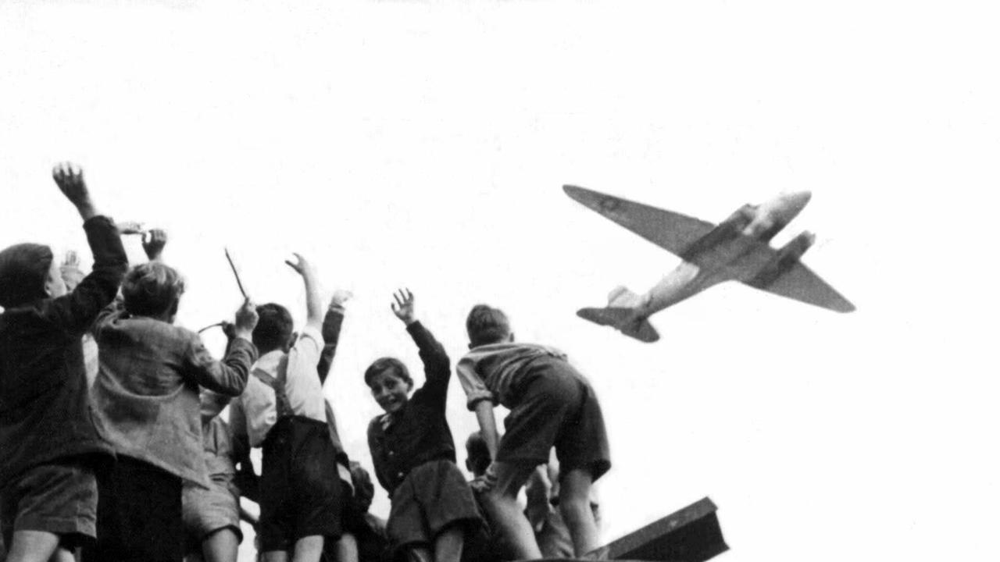

1945 - US uses atomic bombs on Japan to end WW1
In attempt to end the war in the pacific, the US dropped two atomic bombs in Hiroshima and Nagasaki on August 6 and 9.

1949 - USSR tests first nuclear weapon
The Soviet Union had begun research on its own atomic bomb program in 1943. With information and stolen plans from the Manhattan proyect by the soviet spies. The USSR was able to develop a nuclear weapon within a few years after the war was over.

1950 - US tests first hydrogen bomb
On November 1. 1952, the US tested its first thermonuclear device on the island of Elugelab. It was code named Ivy Mike. The device was detonated from a distance of about 30 miles. The fireball was 3 miles wide and reached a height of about 120,000 ft.

1950 - 1953: Korean War
Japan began rulling Korea in 1910, but then ceded control of Korea when it surrendered after WW1. The US and the USSR split Korea into two occupation zones. The north zone was gotten by USSR, and the south zone was gotten by the US. When the two major powers withdrew, there was war between North and South Korea in 1950 when North Koreans invaded the south, the south people didnt know that the attack was coming. Eventually the US got involved to help South Koreas military, causing the US and the Soviet Union to get into a proxy war. There was never a peace agreement signed to ende the war. Instead, the two sides signed an armistice in 1953 that ceased hostilities and formed the Korean Demilitarized Zone.

1960 - USSR tests the largest nuclear weapon ever built
It was known as Big Ivan to the soviets and as Tsar Bomba to the US. RDS-220 was the largest bomb ever built. It detonated at 13,000 feet and its fireball still reached the earth. The mushroomcloud reached an atitude of 210,000 ft.

1962 - Cuban Missile Crisis
On October 16, 1962. President Jhon F. Kennedy was briefed by the CIA that an american spy planetook pictures of soviet nuclear missile launch sites in Cuba. He made a group that became the Executive Commitee to develop the US response. Over the next 13 days the crisis unfolded, making that to be the closest we have been to a nuclear war.

1963 - "Hot Line" established between the US and the USSR.
The cuban missile crisis made the US and the USSR need a communication method to know what was going on (also for the safety of both countries). The communication way was something called a "Red Phone". It was a tele-typewriter that transmitted written messages. The "Hot Line" made it easier for the USSR and the US to communicate. It was first used in 1967 during the Arab - Israeli war.

1987 - Last titan ll goes off alert
On May 5, 1987, the last active titan ll lCBM came off alert at Launch Complex 373-8, Little Rock AFB, Arkansas. This day marked the end of 5he operational life of the largest land based missile in the US arsenal. It was designed to work for 10 years, but it lasted up until 24 years.

1989 - Berlin wall comes down
In june of 1987, president Ronald Reagan stood at the Brandenburg Gate, part of the Berlin wall, and he challenged the Soviet general secretary amd he said to tear down the wall. About 18 months later, millions of germans celebrated as thousands of their copatriots tore down the wall. One of the most iconic symbols in the Cold war.

1991 - Cold War ends
In the wake of the Berlin Wall's fall, Eastern European leaders, excluding Bulgaria, were ousted by popular movements by the close of 1989. The Soviet Union faced internal dissatisfaction, with multiple attempts to remove General Secretary Gorbachev from power. On December 8, 1991, the Soviet Union collapsed. Boris Yeltsin, the Russian Republic's president, established the Commonwealth of Independent States. Thus, after 45 years, the Cold War came to an end.
